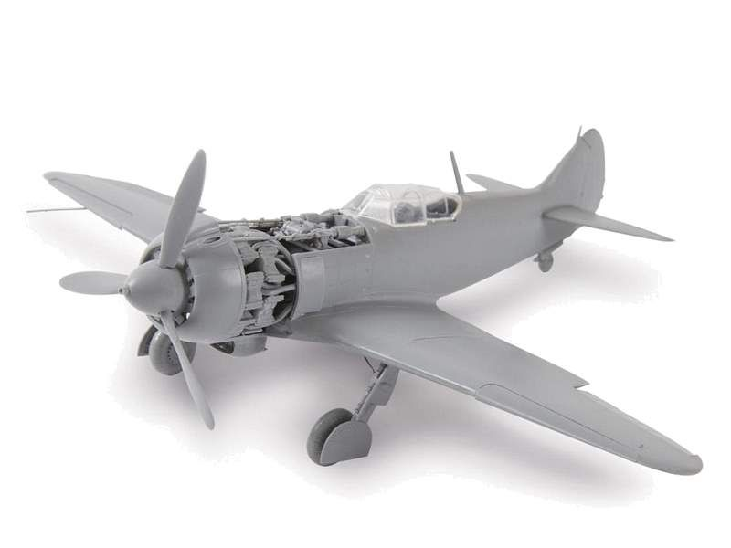

Моделирование

привет
увлекаться моделированием я начал еще в детстве. мне очень нравится клеить и в этом занятии я отвлекаюсь от текущих задач и это позволяет не зацикливаться на проблемах.
сначала клеил модели как мог, они получались обляпанные клеем и не казистые, но с каждой новой склееной моделью получалось лучше и лучше.